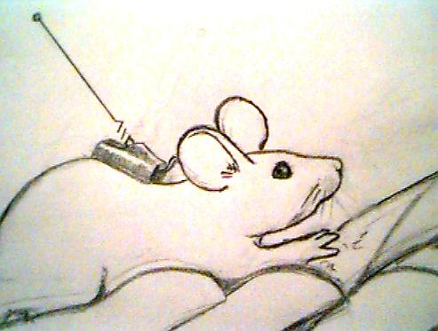

Introduction to Stalkers

This story is written by, for, and about computer geeks (or
geek-wannabes). It represents a fairly near-term future, perhaps
20 years from now. Maybe less. Although techno-geeks are my primary
audience, I hope I've written a story that can appeal to the general
science fiction reader.
To that end, I figured I had better explain a few terms:
- Ping - in addition to being the name of a cat, a "ping" is a computer
network message sent by one computer for the sole purpose of getting a
response from another. (The term comes from SONAR technology.)
- Echo - in addition to being the name of another cat, an "echo" is
a computer network message sent in response to a "ping". For example,
if I want to know if your computer is working, I will have my computer
send yours a ping. Your computer will respond with an echo.
- NAP - Network Access Point - a computer that is the interface between
the Internet and a human. Today it would be a PC, but in tomorrow's
world, it won't be thought of as a separate computer that is connected
to the Internet. It will be part of the Internet. (FYI - this is
not the normal definition for "NAP". I made up this usage.)
- Bot - any autonomous program that roams the Internet performing some function
for it's owner. For example, a "dig-bot" digs for information. A "trace-bot"
attempts to trace a network connection to it's source.
- Autonomous User Agent - a bot that listens to Internet traffic more passively
than a dig-bot, and usually is interested in a wider range of topics.
There are probably more terms that I should define that I can't think
of off hand. Let me know if there are things I should clarify.